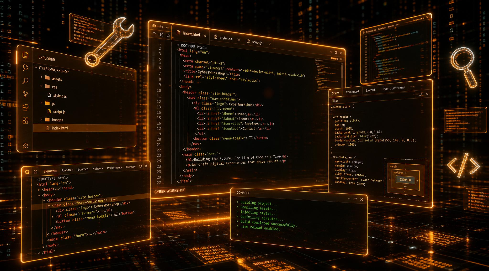

Tools & Setup
Alles, was du brauchst, um HTML & CSS zu lernen. Kostenlose Tools, die Profis nutzen.
VS Code
Der kostenlose Code-Editor von Microsoft. Standard in der Web-Entwicklung.
- Kostenlos für Windows, Mac & Linux
- Auto-Vervollständigung für HTML/CSS
- Tausende Erweiterungen verfügbar
Live Server
Eine Erweiterung für VS Code. Zeigt deine Website sofort im Browser an — aktualisiert sich automatisch.
- In VS Code: Extensions → "Live Server"
- Rechtsklick auf HTML-Datei → "Open with Live Server"
- Jede Änderung sofort sichtbar
W3Schools
Das Nachschlagewerk für Web-Technologien. In jeder Quest findest du direkte Links zu den passenden Themen.
- HTML & CSS Referenz
- Try-it Editor zum Ausprobieren
- Direkt aus den Quests verlinkt
KI als Lernpartner
Nutze ChatGPT oder Claude nicht als Code-Generator, sondern als Erklärer. So lernst du wirklich dazu.
- "Erkläre mir wie <div> funktioniert"
- "Warum zeigt mein Code das nicht an?"
- NIE: "Schreib mir die ganze Website"
Browser DevTools
Das wichtigste Werkzeug nach dem Editor. Inspiziere Elemente, teste CSS live und finde Fehler.
- HTML & CSS live bearbeiten
- Konsole für Fehlermeldungen
- Handy-Ansicht simulieren
KI richtig nutzen — Dein Vorteil
KI-Tools sind mächtig. Aber wenn du sie nur zum Abschreiben nutzt, lernst du nichts. Hier ist der Unterschied:
"Erkläre mir Schritt für Schritt, wie CSS Grid funktioniert. Zeig mir ein einfaches Beispiel."
"Schreib mir den kompletten Code für eine responsive Website mit Navbar, Grid und Footer."
"Mein Code zeigt das Bild nicht an. Hier ist mein Code — was könnte der Fehler sein?"
"Mach die Quest für mich. Ich muss sie nur abgeben."
Der Browser-Detektiv — Deine DevTools-Mini-Quest
Die Browser-Entwicklertools (DevTools) sind das Geheimnis professioneller Web-Entwickler. Mit F12 öffnest du ein Kontrollzentrum, das dir alle Geheimnisse einer Webseite verrät. In 5 Minuten lernst du die wichtigsten Funktionen kennen.
Schritt 1: Die Geheimtür öffnen
Öffne deine eigene Webseite (oder eine beliebige Seite) im Browser und drücke F12 (Windows) oder Cmd + Option + I (Mac). Es öffnet sich ein Panel — das sind die DevTools. Klicke oben auf das Elemente-Symbol (meistens das erste Icon links).
Was du siehst: Links der HTML-Baum deiner Seite, rechts die dazugehörigen CSS-Regeln. Das ist die DNA deiner Webseite — alles, was du in VS Code geschrieben hast, ist hier sichtbar.
Schritt 2: Live editieren
Klicke im Elemente-Panel auf ein <h1> oder <p>. Du kannst den Text direkt im Panel bearbeiten — ohne VS Code zu öffnen! Ändere den Text und drücke Enter. Der Browser zeigt sofort das neue Ergebnis an.
Aha-Effekt: Das ist kein Trick — so testen Profis ihre Änderungen, bevor sie den Code speichern. Wenn dir eine Farbe nicht gefällt, änderst du sie hier live und kopierst dann nur den endgültigen Wert zurück in VS Code.
Schritt 3: CSS experimentieren
Wähle ein Element aus und schau in das rechte Panel. Dort siehst du alle CSS-Regeln, die auf dieses Element zutreffen. Klicke auf eine Farbe (z. B. color: #E67E22) — ein Farbpicker erscheint! Probiere verschiedene Farben aus, ohne etwas zu speichern.
Füge eine neue CSS-Eigenschaft hinzu: Klicke in das leere Feld unter den bestehenden Regeln und tippe background-color: yellow;. Das Element leuchtet sofort gelb — aber nur bei dir im Browser. Die Originaldatei bleibt unverändert.
Warum das genial ist: Du kannst 20 verschiedene Farbkombinationen in 30 Sekunden testen. Ohne Speichern, ohne Neuladen. Das ist die schnellste Feedback-Schleife, die es im Webdevelopment gibt.
Schritt 4: Das Handy simulieren
Klicke oben links in den DevTools auf das Gerätesymbol (zweites Icon von links, sieht aus wie ein Handy vor einem Tablet). Die Seite ändert sich sofort in eine Handy-Ansicht. Du kannst oben die Geräte-Auswahl öffnen und zwischen iPhone, iPad, Samsung Galaxy und vielen anderen wechseln.
Prof-Tipp: Ziehe die rechte Kante des Handy-Rahmens hin und her. So testest du alle Bildschirmbreiten zwischen Handy und Desktop — das ist der schnellste Weg, um responsive Layouts zu prüfen.
Schritt 5: Die Konsole
Klicke oben in den DevTools auf den Reiter Konsole (manchmal als "Console" beschriftet). Hier siehst du Fehlermeldungen, Warnungen und kannst selbst JavaScript-Befehle eingeben. Tippe ein:
console.log("Normal");
console.warn("Warnung!");
console.error("Fehler!");Drücke Enter. Du siehst sofort die Ausgabe. Die Konsole ist das Fenster zur Seele deiner Webseite — hier erfährst du, was im Hintergrund passiert, auch wenn nichts sichtbar ist.
Merke dir: Wenn deine Seite nicht funktioniert, öffne als ERSTES die Konsole. 90% aller Fehler zeigen sich hier als roter Text mit einer Zeilennummer. Das ist wie der Fehler-Code deines Autos — ohne ihn rätst du nur.
Dein DevTools-Cheat-Sheet
- F12 — DevTools öffnen/schließen
- Ctrl + Shift + C — Element direkt auf der Seite anklicken und auswählen
- Ctrl + Shift + M — Handy-Ansicht umschalten
- Ctrl + Shift + J — Direkt zur Konsole springen
- Ctrl + 0 (in DevTools) — Zoom der DevTools zurücksetzen
Warum das dein wichtigstes Werkzeug ist
Professionelle Entwickler verbringen mehr Zeit in den DevTools als im Editor. Warum? Weil hier alles sichtbar wird: Welche CSS-Regel greift? Warum ist das Element 20px zu breit? Woher kommt diese Farbe? Die DevTools sind deine Lupe, dein Röntgengerät und dein Taschenrechner in einem. Ohne sie bist du ein Automechaniker ohne Werkzeugkasten.